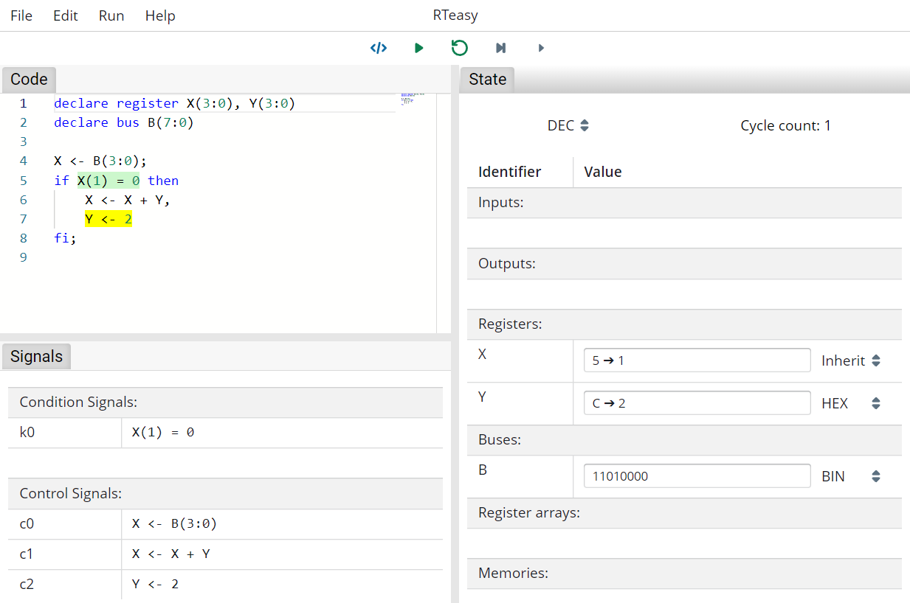

Introduction
...
RTeasy-Online is a development environment for the register transfer language RTeasy. With RTeasy it is possible to design and simulate register transfer programs.
A register transfer language (RT language) is used to describe the hardware using register operations. The following basic pattern is used for the operations:
Z <- f(X_1, X_2, ..., X_m)
where Z, X_1, X_2, ... , X_m represent identifiers for registers and the function f describes the operation. The result is then stored in Z.
This book contains a tutorial for RTeasy-Online and RTeasy as well as a list and explanation of all possible errors that can occur during compilation.
The Register Transfer Language RTeasy
An RTeasy program consists of a set of declarations followed by the actual algorithm. All declarations must be placed in the header of the program. Besides registers, buses, register arrays and memories can be declared. These are all explained in more detail in the next section.
An important concept in RTeasy is the difference between the clocked and the unclocked items. While registers, register arrays and memories are clocked, buses are unclocked. This means that values assigned to a register are only available in the next clock cycle. In contrast, values assigned to a bus are yet available in the same and only in this clock cycle.
Declarations
Before the actual algorithm, all items must first be defined. A declaration is composed of a declare followed by the type of the item, e.g. register, and finally the list of items you want to declare, separated by commas. All names may only contain uppercase letters, digits or underscores, whereby the first character may not be a digit.
Registers
Declare two registers R and C. Register R is 8 bits wide and ranges from 7 (MSB) to 0 (LSB). The register C is 1 bit wide, with the bit at position 0.
declare register R(7:0), C
Buses
Declare two buses B and SECOND_BUS. Bus B is 8 bits wide and ranges from 7 (MSB) to 0 (LSB). The bus SECOND_BUS is 1 bit wide, with the bit at position 5.
declare bus B(7:0), SECOND_BUS(5)
Register Arrays
Declare a register array named ARR. As with registers and buses, a bit range can be specified. The length of the register array is specified in brackets. The length must be a power of two.
declare register array ARR(7:0)[4]
Register arrays may be read no more than twice and written no more than once per execution path and cycle.
Memories
Declare a memory named MEM. Memories require two registers, whereby the first is the address register and the second is the data register. So in this case AR is the address register and DR is the data register. Thus the memory is of size 2^16 = 64 KByte and 1 byte wide.
declare register AR(15:0), DR(7:0)
declare memory MEM(AR, DR)
Inputs/Outputs
Declare an input IN and an output OUT. As far as the execution is concerned, outputs behave exactly as registers do. Inputs behave exactly as buses do, except that they are read-only and are not reset between clock cycles.
declare input IN(7:0)
declare output OUT(7:0)
Inputs and outputs define the interface of a program. The inputs and outputs become input and output ports respectively in the VHDL export.
Algorithm
The declarations are followed by the actual algorithm. The algorithm consists of a list of states that are executed sequentially. A state represents a clock cycle in which several micro operations are executed in parallel. Each state is terminated by a semicolon.
declare register A(3:0), B(3:0), REG(3:0)
# A simple state with two micro operations executed in parallel.
A <- A + 1, B <- B - 1;
# Another state with only one micro operation.
REG <- A and B;
Label
In addition to the micro operations, a state can receive a label to which it can be jumped to:
declare register A(3:0)
# A state with the label MY_LABEL.
MY_LABEL: A <- A + 1;
# ...
# Resume execution at MY_LABEL
goto MY_LABEL;
Conditional Branch
Since registers are clocked, it is not possible to jump in one cycle depending on the result of a register assignment. Instead two cycles are needed. For this purpose, a state can have a conditional branch separated by the pipe symbol. After the pipe, all assignments have already taken place. The conditional branch may only contain if, switch and goto operations. With this, it is possible in some cases to save a clock cycle by writing:
declare register COUNTER(7:0)
LOOP: nop; # do something
CHECK: COUNTER <- COUNTER + 1 | if COUNTER < 20 then goto LOOP fi;
instead of:
declare register COUNTER(7:0)
LOOP: nop; # do something
INC: COUNTER <- COUNTER + 1;
CHECK: if COUNTER < 20 then goto LOOP fi;
Micro Operations
The micro operations are the building blocks of the algorithm. Besides the unconditional operations (assignment, no operation and read/write) there are jumps (goto) and conditional operations (if and switch).
Assignment
...
No Operation
The nop operation will not trigger any operation and can be used to have an empty state.
nop;
Read/Write
The read and write operations are available for operating on memories. Both operations take the name of the memory as an argument, e.g. read MEM. When reading, the value currently stored in the memory at the position of the address register is written to the data register. In the case of writing, the process is exactly the opposite: The value from the data register is written into the memory.
declare register AR(3:0), DR(3:0)
declare memory MEM(AR, DR)
# Read value at position 4
AR <- 4;
read MEM;
# Write (value + 1) back to the memory
DR <- DR + 1;
write MEM;
Assert
The assert operation checks if an expression (with a size of one bit) is one or zero. If the expression evaluates to zero, the assert fails and the simulator will stop immediately and highlight the failed assert.
The assert operation is intended as a tool for development and is therefore only executed in the simulator. It will not execute if the program gets compiled to VHDL.
declare bus BUS(3:0)
assert 5 > 2; # passes
assert BUS = 2, BUS <- 2; # passes
assert 2 = 3; # fails
Goto
The goto operation takes a label and can be used to resume the execution at a different state than the following one.
declare register A, B
START: A <- 0, B <- 1, goto SKIP;
A <- B; # <-- This is never executed
SKIP: nop; # do something
END: goto START;
If
The if operation checks a single condition, which can be either one or zero, and executes the if or else branch accordingly. Syntactically, the else branch is optional. If it is missing a simple nop is used instead. Both branches can contain any number of micro operations, just like a state. Thus, it is also possible to nest if operations.
declare register A(3:0), B(3:0), C(3:0), D(3:0), COUNT(3:0)
# If/else
if COUNT = 0 then
A <- 0, B <- 0
else
A <- 1
fi;
# Nested if
if A = 0 and B = 0 then
C <- 0, if D > 1 then D <- 0 fi
fi;
Switch
The switch operation checks an expression against various values. The expression must have a fixed size. This requirement is necessary to have a well defined size in which to evaluate. Fixed size expression are: comparisons, concatenations, registers, buses, register arrays and bit strings.
The values used in the case clauses can be literals or constant expressions. Constant expression are: literals, concatenations only containing constants and terms only containing constants.
In addition to the case clauses, there must always be exactly one default clause.
declare register A(3:0), B(3:0), C(3:0), D(3:0)
switch A.D(2) { # match against a fixed size expression
case 0: B <- 2, C <- 2 # case clause 0
case 1: nop # case clause 1
case 1 + 1: C <- 3 # case clause 2 (1 + 1)
default: goto END # default clause
};
END:
Expressions
Expressions appear in assignments, asserts, and as conditions. Besides literals, registers and buses there is the possibility to form concatenations and terms.
When evaluating expressions, expressions of different sizes are automatically adjusted by zero extending by default. However, if you want for example a register to be interpreted as signed, you can use the sign extend operator (see further below) to extend with the sign bit instead. What the exact rules are when evaluating expressions can be seen in Evaluation of Expressions.
Literals
Decimal
declare register X(7:0)
X <- 12;
X <- 00000012; # leading zeros are stripped
Binary
Binary literals are prefixed with 0b/0B (or with % for compatibility with older versions).
declare register X(7:0)
X <- 0b110011;
X <- 0B110011;
X <- %110011;
X <- 0b0000110011; # leading zeros are stripped
Hexadecimal
Hexadecimal literals are prefixed with 0x/0X (or with $ for compatibility with older versions).
declare register X(7:0)
X <- 0xfa;
X <- 0XfA;
X <- $fa;
X <- 0x0000fa; # leading zeros are stripped
Bit Strings
Bit strings are a sequence of zeros and ones delimited by double quotes. They work pretty much the same as normal binary numbers. The only difference is that they have a fixed size unlike other literals. All other literals ignore leading zeros and are always equivalent to the shortest binary representation of themselves.
The main use case for bit strings is for use in concatenations (see further below) where all parts must have a well defined size.
declare register X(7:0)
X <- "01010";
Registers/Buses
Registers and buses can be used simply by name. Individual bits can be accessed by specifying a bit range.
declare register X(7:0)
declare register REG(7:0)
declare bus BUS(7:0)
X <- REG;
X <- BUS;
X <- REG(4:2); # Access a subrange
X <- BUS(4); # Access a single bit
Register Arrays
Using register arrays works similiar to using registers. In addition to the name, an index must be specified, which is itself an expression. Accessing individual bits is not possible with register arrays.
In addition, care must be taken that register arrays may be read no more than twice once per execution path and cycle.
declare register X(7:0)
declare register IDX(1:0)
declare register array ARR(7:0)[4]
X <- ARR[0]; # Read at index 0
X <- ARR[IDX + 1]; # Use an expression as the index
If it is necessary to access individual bits, this can be done with the help of a temporary bus:
declare register X(7:0)
declare bus TEMP(7:0)
declare register array ARR(7:0)[4]
TEMP <- ARR[0], X <- TEMP(4:2); # Access a subrange at index 0
Concatenations
Concatenations can be composed of registers, buses, register arrays and bit strings. The individual values are simply concatenated bit by bit.
declare register X(31:0)
declare register REG(7:0)
declare bus BUS(7:0)
declare register array ARR(7:0)[4]
X <- REG."001100".BUS(2);
X <- "01".ARR[3].REG(3:1);
Terms
Unary terms are written as OPERATOR EXPRESSION and binary terms are written as EXPRESSION OPERATOR EXPRESSION.
declare register X(15:0)
declare register REG(7:0)
declare bus BUS(7:0)
X <- neg REG;
X <- REG + 1;
X <- not BUS."1" + 42;
The following table gives an overview of all operators. Operators with higher precedence are executed before operators with lower precedence. Precedence comes before associativity.
| Precedence | Operator | Associativity | Individual operators |
|---|---|---|---|
| 10 | Unary Sign | right-to-left | - ... |
| 10 | Unary Negation | right-to-left | neg ... |
| 9 | Sign Extend | right-to-left | sxt ... |
| 8 | Addition | left-to-right | ... + ... |
| 8 | Subtraction | left-to-right | ... - ... |
| 7 | Less Than | left-to-right | ... < ... |
| 7 | Less Than Or Equal | left-to-right | ... <= ... |
| 7 | Greater Than | left-to-right | ... > ... |
| 7 | Greater Than Or Equal | left-to-right | ... >= ... |
| 6 | Equality | left-to-right | ... = ... |
| 6 | Inequality | left-to-right | ... <> ... |
| 5 | Bitwise NOT | right-to-left | not ... |
| 4 | Bitwise NAND | left-to-right | ... nand ... |
| 3 | Bitwise AND | left-to-right | ... and ... |
| 2 | Bitwise NOR | left-to-right | ... nor ... |
| 1 | Bitwise OR | left-to-right | ... or ... |
| 0 | Bitwise XOR | left-to-right | ... xor ... |
IDE User Guide
The RTeasy-Online IDE has two different modes. On the one hand there is the editing mode, in which the program is developed. On the other hand there is the simulation mode, where you can execute the program and display the register, bus, register array and memory contents. In this mode, you cannot modify the program. In both modes all views can be moved around freely.
At the start you are always in the editing mode.
TODO: Options Dialog
Editing Mode
At the top you can see the toolbar. With File and Edit classic IDE functions like loading/saving the file or undo/redo can be done. Under Run you can find the same functionality that is available in the second row in the center of the screen. The first button switches between the two modes. The remaining four are used to control the simulation and are disabled in edit mode.
Besides syntax highlighting, the code editor supports autocompletion and code snippets for frequently used constructs like switch-case operations. At the same time, all errors, if any, are displayed live on the right side.
Each error is associated with an error code that can be clicked and leads to the compiler error index that explains the errors in more detail.

Simulation Mode
This mode is for the simulating and testing the program. In addition to the code, the signals and the current state can be viewed here. The state view displays the register, bus, register array and memory contents. During simulation, both the code and the state view provide visual hints.
The buttons at the top center are now all operable. From left to right they let you switches between the two modes, start/stop the simulation, reset the simulation, make a step (execute the next state) and make a micro step (execute the next micro step).

Code View
During simulation, the code view provide visual hints. When executing a micro step, the current micro step is highlighted in yellow. Conditions are highlighted either green or red, respectively, whether they evaluate to true or false. For conditions, this highlighting becomes transparent as soon as the next micro operation is executed. When executing a step, the complete current step is highlighted in yellow.
State View
The state view displays the register, bus, register array and memory contents. In addition, the cycle count is displayed in the upper right corner.
Via several dropdowns it is possible to select the base in which the values are presented. The dropdown in the upper left corner serves as the global default setting. This setting can then be inherited elsewhere (Inherit) or overwritten locally (BIN/DEC/HEX).
During simulation, the state view provide visual hints. When executing with micro steps, writes to registers are represented by an arrow, with the value that is assigned after the clock cycle on the right-hand side. After executing a complete step, values that have changed are highlighted in yellow.
TODO: Memory/Register Array View
Signals View
The signals view shows the condition signals and control signals of a resulting execution unit and control unit respectively.
Breakpoints
By clicking on the line numbers it is possible to set or remove breakpoints. If the simulation is now started via the play button, it will pause as soon as a breakpoint is reached.
TODO: Image
VHDL Export
TODO: ...
Examples
TODO: ...
Advanced
The following sections contain advanced/in-depth material.
Evaluation of Expressions
TODO: ...
Memory File Format
The memory file format is a simple line-based file format.
Header
The first line is the header, which indicates in which base the numbers are stored and how large the memory is. The header must always be in the following shape:
[B|b|H|h] <ADDRESS_SIZE> <DATA_SIZE>
B or b means binary, H or h means hexadecimal. ADDRESS_SIZE specifies the bit width of the address space and DATA_SIZE specifies the bit width of the data. For example, a memory that is stored in a binary base, with 65536 (= 2^16) entries and a width of 1 byte, has the following header:
B 16 8
Data
After the header, the data is stored line by line. The first line, unless otherwise specified, is at address 0. Subsequent lines are always located at the next address. For example, the following describes a memory with the numbers 0x1, 0x7 and 0xF1 at address 0x0, 0x1 and 0x2:
H 4 16
1
7
F1
Additionally, it is possible to store data at a specific address. With <ADDRESS>: the address for the next line can be specified. For example, in the following, the values 0xFF and 0xC are stored at the addresses 0x9 and 0xA:
H 4 16
9:
FF
C
Of course, this can be combined in any way:
H 4 16
3
4
C:
2
1
3:
25
Comments
The memory format allows simple line comments starting with the hash (#) character. Comments are allowed in all lines including the header. Example:
H 8 32 # Memory in hexadecimal base
# Hello World
4: # Store some data, starting at address 4
FF # (addr = 4)
0 # (addr = 5)
1 # (addr = 6)
2 # (addr = 7)
Errors
An overview of all possible errors that can occur during compilation.
E001
This error indicates that a symbol is declared more than once.
Examples
declare register X(3:0)
declare register X # error: duplicate symbol "X"
declare register X(3:0)
declare bus X # error: duplicate symbol "X"
E002
This error indicates that the length of a register array is not a power of two. The length must always be a power of two.
Examples
# error: length of register array "ARR" must be a power of two
declare register array ARR(7:0)[3]
# error: length of register array "ARR" must be a power of two
declare register array ARR(7:0)[0]
E003
This error occurs when a register array is used without an index expression.
Examples
declare register X(7:0)
declare register array ARR(7:0)[4]
X <- ARR[0] + 1; # ok
X <- ARR + 1; # error: register array "ARR" is missing index [...]
declare register array ARR(7:0)[4]
ARR[3] <- 1 + 1; # ok
ARR <- 1 + 1; # error: register array "ARR" is missing index [...]
E004
This error indicates that a label is declared more than once. Labels are used as goto marks and must therefore be unique.
Examples
declare register X(3:0), Y(3:0)
MY_LABEL: X <- Y;
MY_LABEL: X <- X + 1; # error: duplicate label "MY_LABEL"
E005
This error occurs when a symbol can not be found.
Examples
declare register AR(3:0)
declare memory MEM(AR, DR) # error: no register named "DR" found
X <- 42 + 2; # error: no register or bus named "X" found
declare register X(3:0)
X <- ARR[0]; # error: no register array named "ARR" found
read MEM; # error: no memory named "MEM" found
E006
This error occurs when a label can not be found.
Examples
LABEL_A: goto LABEL_B; # error: no label named "LABEL_B" found
E007
This error occurs when an expression without a fixed size is used in a switch operation. This requirement is necessary to have a well defined size in which to evaluate. Fixed size expression are: comparisons, concatenations, registers, buses, register arrays and bit strings.
Examples
declare register X(3:0), Y(3:0)
switch X + Y { # error: expected fixed size expression
case 1: nop
default: nop
};
switch 12 { # error: expected fixed size expression
case 1: nop
default: nop
};
declare register X(3:0), Y(3:0)
switch X = Y { # ok
case 1: nop
default: nop
};
switch "1100" { # ok
case 1: nop
default: nop
};
E008
This error occurs when a non-constant expression used in a case clause. Constant expression are: literals, concatenations only containing constants and terms only containing constants.
Examples
declare register X(3:0), Y(3:0)
switch "0101" {
case X + Y: nop # error: expected constant expression
default: nop
};
switch "0101" {
case 7: nop # ok
default: nop
};
switch "0101" {
case 3 + 4: nop # ok
default: nop
};
E009
This error indicates a switch operation with zero or more than one default clause. Switch operations must always have exactly one default clause.
Examples
# error: expected exactly one default clause
switch "0101" {
case 1: nop
};
# error: expected exactly one default clause
switch "0101" {
case 1: nop
default: nop
default: nop
};
E010
This error occurs when a literal other than the bit string is used in a concatenation. Concatenations may only contain elements of fixed size, thus only registers, buses, register arrays and bit strings.
Examples
declare register X(7:0), Y(3:0)
X <- Y."101".Y(0); # ok
X <- Y.5.Y(0); # error: concat must not contain numbers other than bit strings
E011
TODO: ...
E012
TODO: ...
E013
TODO: ...
E014
TODO: ...
E015
TODO: ...
E016
TODO: ...
E017
TODO: ...
E018
TODO: ...
E019
TODO: ...
E020
TODO: ...
E021
TODO: ...
E022
TODO: ...
E023
TODO: ...
E024
TODO: ...
E025
This error indicates that a register, bus, register array or memory is assigned more than once in a cycle. Only one assignment to an item may be executed per execution path and cycle.
Examples
declare register X(3:0)
X <- 2, X <- 1; # error: register "X" is assigned more than once
declare register AR(3:0), DR(3:0)
declare memory MEM(AR, DR)
read MEM, read MEM; # error: register "DR" is assigned more than once
write MEM, write MEM; # error: memory "MEM" is assigned more than once
declare register X(3:0), COND
# ok, because always only one of the two assignments is executed in one cycle.
if COND then X <- 2 else X <- 1 fi;
E026
TODO: ...
E027
TODO: ...
E028
TODO: ...